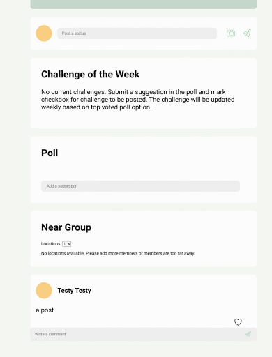

This project was made during my STEP intership at Google. The goal was to create a web application using the Java Servlet framework we had learned during our starter projects.
With the way the COVID-19 pandemic has affected the nature of many interpersonal relationships, we were inspired to create a social media website to help people stay connected with their social circle. Through a website focused on completing challenges, we hope to engage people through creating groups, completing fun activities, and sharing their progress with members of their groups.
Figma Prototype
During the ideation process, I created a Figma prototype to lay down the foundations for the UI of the website. Then, in collaboration with my teammates, we finalized upon the design, which later aided in our coding process as it reduced any misinterpretations we had about the features.
My Features
Features I worked on for this project included creating polling functionality, updating weekly challenges, implementing a predictive search algorithm and a ranking algorithm based on levels of connections between members, and the ability to join new groups by navigating to the group url. The design document for the predictive search and ranking algorithm implementations can be found here.
Polling
When navigating to a group that does not have a challenge, the user can input a poll option and vote on that option to populate the weekly challenge. They can vote on other polling options as well as add new ones. The options are listed in order of user votes, and every seven days, the group challenge is updated to be the top most voted option.
Predictive Search
Members of a group can add other users to the group by searching up a name, and suggested names will surface based on a predictive search algorithm that takes into account autocorrect, autocomplete, and whitespace to list suggested user names in order of best match.
Ranking Users
Upon searching for a name and then pressing enter, matching and related users will be listed in order of connection with the root user (the user doing the search).
In the first example, Nico Rodriguez is already in a group with me so when I search up "Rodriguez" in another group and press enter, Nico Rodriguez will be listed above other users. In the second example, I am in a group with Connie Lin, who is in a group with Aaliyah Odom, so when I search up Aaliyah, the user Aaliyah Odom will be listed above other users because she has a closer connection to me than the other users.
Other Features
The features my teammates worked on include: profile page, adding posts and comments, group tags (using TF-IDF), and location based restaurant recommendations (hopefully this will be useful when it is safe to meet up with people).
Profile Page
Posts
Group Tags
Group tags are generated using TF-IDF and give insight into what members of a particular group talk about most.
Near Group Recommendations
This features suggests the closest restaurants for all members in a group.

Conclusion
Throughout the process of building this project, we pivoted focus to add in a couple of complex features, namely predictive search and user ranking, group tags, and restaurant recommendations. Because of this, we were not able to implemented all of the features included in the Figma mockup. I believe, however, that the complex features played well into the overall goals of the project as well as pushed us to come up with practical usages for various data structures and algorithms.